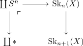
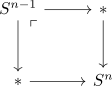
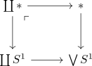

pi_0 is localization
Remark
- does not really make sense if one developes anima from model independent principles
- We assume that
- cw structure of an anima
- intuitive definition of $\pi_0$ (e.g. by the universal property of $\mathrm{An} \simeq \mathrm{CW}[\text{htpy.equiv}^{-1}] \simeq \mathrm{Top}[\text{w.e.}^{-1}]$ and extending $\pi_0: \mathrm{CW} \rightarrow \mathrm{Set}$ to the localizaiton).
- we want to show that $\pi_0(X)$ is equivalent to some $\coprod \{*\}$ - which we regard as set.
Proposition
Let $X$ be an anima. Then $X$ is equivalent to
Proof
Recall that $X \simeq \mathrm{colim}\mathrm{sk}_{n}(X)$ is the colimit of attaching spheres. Then we claim that $\pi_0(\mathrm{Sk}_1(X)) \simeq \pi_0(\mathrm{Sk}_n(X)) \simeq \pi_0(X)$ for $n \geq 1$.
For that it suffices to observe we obtain $\mathrm{Sk}_2(X)$ (or $\mathrm{Sk}_n(X)$) by pushouts

now the localization functor $\mathrm{An} \rightarrow \mathrm{An}[S^1 \rightarrow *]$ preserves colimits so the diagram above is also a pushout in $\mathrm{An}[S^1 \rightarrow *]$. Now observe that $* \rightarrow S^n$ lies in the <forgot name, closed under pushouts> as it is given by inductively

But $S^n \rightarrow *$ is the left inverse of the equivalence $* \rightarrow S^n$, hence also an equivalence (homotopy category functor is conservative, left inverse of an isomorphism as right inverse). In short, $S^n \rightarrow *$ lies in <name>.
But this shows that the left leg of the pushout
is an equivalence, hence so is the right leg in $\mathrm{An}[(S^1 \rightarrow *)]$. Moreover, $X = \mathrm{colim}_n \mathrm{Sk}_n(X)$ in $\mathrm{An}[(S^1 \rightarrow *)^{-1}]$ and it is an eventually constant, sequential diagram, so $X \simeq \mathrm{Sk}_1(X)$ in $\mathrm{An}[(S^1 \rightarrow *)^{-1}]$.
Hence we have shown that $X$ is equivalent to a \(1\)-dimensional CW-Complex in $\mathrm{An}[(S^1 \rightarrow *)^{-1}]$ and those are classified by $\coprod \bigvee S^1$ (cf. classification of one dimensional CW Complexes up to homotopy). Now we it remains to show that $\bigvee S^1$ is equivalent to $*$ in $\mathrm{An}[(S^1 \rightarrow *)^{-1}]$. But it is the pushout of

and hence $* \simeq \bigvee S^1$ once we invert $* \rightarrow S^1$ (which is the right inverse of $S^1 \rightarrow *$).
todo:
- maybe there exists a clearer argument
- using $\mathrm{map}(S^n, -)$ ?